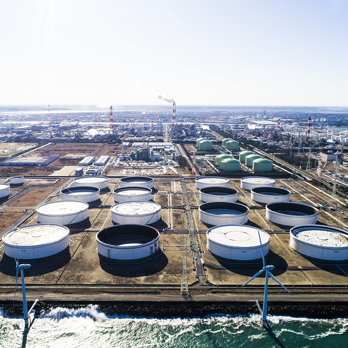

数据采集
明确管道全生命周期不同阶段需采集数据得种类和属性，并按照源头采集的原则进行采集。
高后果区识别
高后果区识别工作由熟悉管道沿线情况的人员进行，识别人员应参加有关培训。
风险评价
风险评价基于评价目标，结合现有数据的完整程度以及经济投入等因素，选择使用的评价方法。
完整性评价
完整性评价根据管道失效的历史和风险评价的结果选择适用的检测内容和技术指标。
维修维护
根据高后果区识别结果、风险评价和完整性评价等结论与建议制定管道巡护方案，明确巡护的内容、频次和重点关注位置，高后果区应作为巡护的重点段。
效能评价
对失效进行分析，包括泄漏、管体不可接受缺陷、对管道安全造成影响的周边环境变化或附属设施损坏以及其他造成重大经济损失的情况等。